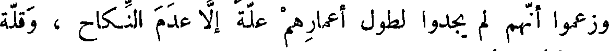
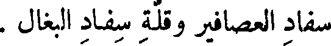
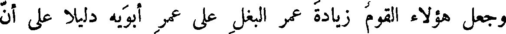
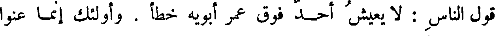
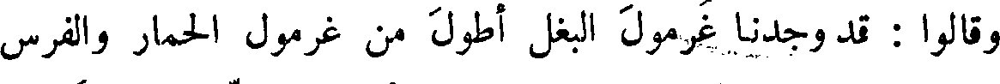
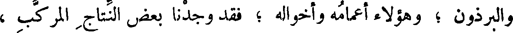
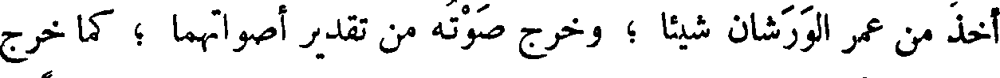
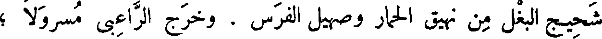

File: 000602.gt.txt (if the image is defective, simply delete all Arabic text and the line will be excluded)

( من طرائف عبد الأعلى القاص )
File: 000603.gt.txt (if the image is defective, simply delete all Arabic text and the line will be excluded)

وكان من طرائف ما يأتي به عبد الأعلى القاص ، قوله في الخصي ،
File: 000604.gt.txt (if the image is defective, simply delete all Arabic text and the line will be excluded)

وكان لغلبة السلامة عليه يتوهم عليه الغفلة ، وهو الذي ذكر الفقير مرة
File: 000605.gt.txt (if the image is defective, simply delete all Arabic text and the line will be excluded)

وسمكته شلقة(5) ، [ وإزاره خرقة ] .
File: 000606.gt.txt (if the image is defective, simply delete all Arabic text and the line will be excluded)

وسخنت معدته ، ولانت جلدته ، وانجردت شعرته ، واتسعت فقحته ، 49
File: 000607.gt.txt (if the image is defective, simply delete all Arabic text and the line will be excluded)

وكثرت دمعته ! !
File: 000608.gt.txt (if the image is defective, simply delete all Arabic text and the line will be excluded)

فلا هم ينزعون ، ولا الخصيان ينكلون ، لأن الرماية فيهم فاشية ، وإن
File: 000609.gt.txt (if the image is defective, simply delete all Arabic text and the line will be excluded)

كان الخصي أسوارا بلغ منهم(1) ، وإن كان جمع مع الرماية الثروة ، واتخذ
File: 000610.gt.txt (if the image is defective, simply delete all Arabic text and the line will be excluded)

بطرسوس ، وأذنة ، الضياع واصطنع الرجال ، واتخذ العقد المغلة(2) فمضرة
File: 000611.gt.txt (if the image is defective, simply delete all Arabic text and the line will be excluded)

كل واحد منهم عليهم ، تفي بمضرة قائد ضخم . ولم تر عداوة قط تجوز
File: 000612.gt.txt (if the image is defective, simply delete all Arabic text and the line will be excluded)

مقدار عداوتهم لهم ، وهذا يدل على مقدار فرط الرغبة في النساء ،
File: 000613.gt.txt (if the image is defective, simply delete all Arabic text and the line will be excluded)
وعلى شهوة شديدة للمباضعة ، وعلى أنهم قد عرفوا مقدار ما فقدوا ، وهذه 57
File: 000614.gt.txt (if the image is defective, simply delete all Arabic text and the line will be excluded)

خصلة كريمة مع طلب المثوبة ، وحسن الأحدوثة .
File: 000615.gt.txt (if the image is defective, simply delete all Arabic text and the line will be excluded)

[خصاء الصابئة]
File: 000616.gt.txt (if the image is defective, simply delete all Arabic text and the line will be excluded)

فأما الصابئون ، فإن العابد منهم ربما خصى نفسه ، فهو في هذا الموضع
File: 000617.gt.txt (if the image is defective, simply delete all Arabic text and the line will be excluded)

قد تقدم الرومي ، فيما أظهر من حسن النية ، وانتحل من الديانة والعبادة ،
File: 000618.gt.txt (if the image is defective, simply delete all Arabic text and the line will be excluded)

بخصاء الولد التام(3) ، وبإدخاله النقص على النسل ، كما فعل ذلك أبو المبارك
File: 000619.gt.txt (if the image is defective, simply delete all Arabic text and the line will be excluded)
الصابي . وما زال خلفاؤنا وملوكنا يبعثون إليه ، ويسمعون منه ، ويسمر
File: 000620.gt.txt (if the image is defective, simply delete all Arabic text and the line will be excluded)

عندهم ، للذي يجدونه عنده من الفهم والإفهام ، وطرف الأخبار ، ونوادر
File: 000621.gt.txt (if the image is defective, simply delete all Arabic text and the line will be excluded)

الكتب ، وكان قد أربى على المائة ، ولم أسمع قط بأغزل منه ،
File: 000622.gt.txt (if the image is defective, simply delete all Arabic text and the line will be excluded)

كان يصدق عن نفسه فما في الأرض أزنى منه .
File: 000623.gt.txt (if the image is defective, simply delete all Arabic text and the line will be excluded)

منه في مثل أعدادهم(1) من جميع أجناس الرجال،وأنهم تفقدوا أعمارهم وأعمار
File: 000624.gt.txt (if the image is defective, simply delete all Arabic text and the line will be excluded)

إخوتهم وبني أعمامهم الذين لم يخصوا، فوجدوا طول العمر في الخصيان أعم ؛
File: 000625.gt.txt (if the image is defective, simply delete all Arabic text and the line will be excluded)

ولم يجدوا في عموم طوال العمر فيهم واحدا نادرا ؛ كفلان وفلان من الفحول .
File: 000626.gt.txt (if the image is defective, simply delete all Arabic text and the line will be excluded)

وزعموا أنهم لم يجدوا لطول أعمارهم علة إلا عدم النكاح ، وقلة
File: 000627.gt.txt (if the image is defective, simply delete all Arabic text and the line will be excluded)

استفراغ النطف لقوى أصلابهم .
File: 000628.gt.txt (if the image is defective, simply delete all Arabic text and the line will be excluded)

قالوا : وكذلك لم نجد فيما يعايش الناس في دورهم ، من الخيل والإبل ،
File: 000629.gt.txt (if the image is defective, simply delete all Arabic text and the line will be excluded)

والحمير ، والبقر ، والغنم ، والكلاب ، والدجاج ، والحمام ، والديكة ،
File: 000630.gt.txt (if the image is defective, simply delete all Arabic text and the line will be excluded)

والعصافير ؛ أطول أعمارا من البغال .
File: 000631.gt.txt (if the image is defective, simply delete all Arabic text and the line will be excluded)

وكذلك قالوا : وجدنا أقلها أعمارا العصافير . وليس ذلك إلا لكثرة
File: 000632.gt.txt (if the image is defective, simply delete all Arabic text and the line will be excluded)

سفاد العصافير وقلة سفاد البغال .
File: 000633.gt.txt (if the image is defective, simply delete all Arabic text and the line will be excluded)

وجعل هؤلاء القوم زيادة عمر البغل على عمر أبويه دليلا على أن
File: 000634.gt.txt (if the image is defective, simply delete all Arabic text and the line will be excluded)

قول الناس : لا يعيش أحد فوق عمر أبويه خطأ . وأولئك إنما عنوا
File: 000635.gt.txt (if the image is defective, simply delete all Arabic text and the line will be excluded)

( النتاج المركب )
File: 000636.gt.txt (if the image is defective, simply delete all Arabic text and the line will be excluded)

الناس دون جميع الحيوان .
File: 000637.gt.txt (if the image is defective, simply delete all Arabic text and the line will be excluded)

وقالوا : قد وجدنا غرمول البغل أطول من غرمول الحمار والفرس
File: 000638.gt.txt (if the image is defective, simply delete all Arabic text and the line will be excluded)

والبرذون ؛ وهؤلاء أعمامه وأخواله ؛ فقد وجدنا بعض النتاج المركب ،
File: 000639.gt.txt (if the image is defective, simply delete all Arabic text and the line will be excluded)

وبعض الفروع المستخرجة ، أعظم من الأصل ؛ ووجدنا الحمام الراعبي
File: 000640.gt.txt (if the image is defective, simply delete all Arabic text and the line will be excluded)

أعظم من الورشان الذي هو أبوه ، ومن الحمامة التي هي أمه ؛ ولم نجده
File: 000641.gt.txt (if the image is defective, simply delete all Arabic text and the line will be excluded)

أخذ من عمر الورشان شيئا ؛ وخرج صوته من تقدير أصواتهما ؛ كما خرج
File: 000642.gt.txt (if the image is defective, simply delete all Arabic text and the line will be excluded)

شحيج البغل من نهيق الحمار وصهيل الفرس . وخرج الراعبي مسرولا ؛
File: 000643.gt.txt (if the image is defective, simply delete all Arabic text and the line will be excluded)

يوجب على الناس الإطاعة ، والبخوع(1) بالديانة ، [ لا(2) ] على جهة
File: 000644.gt.txt (if the image is defective, simply delete all Arabic text and the line will be excluded)

الاستبصار والمحبة ، وليس فيه صلاح معاش ولا تصحيح دين ! ؟ والناس
File: 000645.gt.txt (if the image is defective, simply delete all Arabic text and the line will be excluded)

لا يحبون إلا دينا أو دنيا : فأما الدنيا فإقامة سوقها [ وإحضار نفعها .
File: 000646.gt.txt (if the image is defective, simply delete all Arabic text and the line will be excluded)

وأما الدين فأقل ما يطمع في استجابة العامة ] ، واستمالة الخاصة ، أن يصور
File: 000647.gt.txt (if the image is defective, simply delete all Arabic text and the line will be excluded)

في صورة مغلطة ، ويموه تمويه الدينار البهرج ، والدرهم [ الزائف ] الذي
File: 000648.gt.txt (if the image is defective, simply delete all Arabic text and the line will be excluded)

لا يغلط فيه الكثير ، ويعرف حقيقته القليل(3) . فليس إنفاقهم عليها من
File: 000649.gt.txt (if the image is defective, simply delete all Arabic text and the line will be excluded)

حيث ظننت . وكل دين يكون أظهر [ اختلافا وأكثر ] فسادا ، يحتاج
File: 000650.gt.txt (if the image is defective, simply delete all Arabic text and the line will be excluded)

30 من الترقيع والتمويه(4) ، ومن الاحتشاد له والتغليظ(5) فيه إلى أكثر . وقد
File: 000651.gt.txt (if the image is defective, simply delete all Arabic text and the line will be excluded)

علمنا أن النصرانية أشد انتشارا من اليهودية تعبدا ، فعلى حسب ذلك